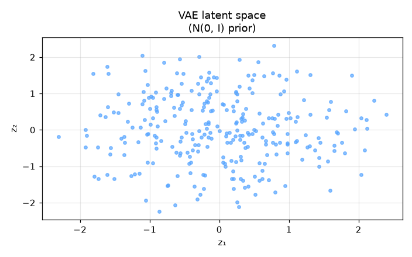

Variational Autoencoder (VAE) — AI engineering example · part of the MLOps monorepo
This example is grounded in Variational Autoencoder (VAE). The equations below drive every forward and backward pass in the implementation.
VAEs learn a probabilistic latent space via the Evidence Lower Bound (ELBO). The encoder $q_\phi(z|x)$ maps inputs to a distribution. The decoder $p_\theta(x|z)$ reconstructs inputs from latent samples. The KL divergence term regularizes the latent space to match a standard normal prior.
Concrete forward-pass / update evaluation using the algorithm's own equations:

Interactive latent space explorer: traverse 2D latent manifold; sample generation with sliders; KL divergence monitor.
The example follows a consistent data → train → evaluate → serve pipeline. Inputs are loaded and validated, transformed by the core algorithm, scored against held-out data, and exposed through a REST API.
| Class | Public methods | Responsibility |
|---|---|---|
PredictRequest | — | |
PredictBulkRequest | — | |
PredictResponse | — | |
BulkPredictResponse | — | |
DriftResponse | — | |
StatsResponse | — | |
VAE | _init_weights, _encode, _decode, fit, encode, decode, generate, predict_proba, predict, evaluate, save, load, to_dict | Variational Autoencoder for data generation. Learns a probabilistic latent space and can generate new data variations. Args: n_features: Number of input features latent_dim: Dimension of the latent space hidden_dim: Hidden units in encoder/decoder learning_rate: Gradient descent step size n_iterations: Number of training epochs weight_decay: L2 regularization clip_value: Gradient clipping threshold random_seed: Random seed |
data.py reads the source dataset and splits train/test.model.py applies the mathematics from Section 1.api.py exposes prediction endpoints with drift detection.Key design choices in this module: a pure-NumPy implementation (no PyTorch/TensorFlow), schema validation via ai_core.validation, structured JSON logging through ai_core.logging, Prometheus metrics from ai_core.metrics, and MLflow/model-registry persistence via ai_core.model_registry. The FastAPI service wraps the trained model with observability middleware from ai_core.fastapi_middleware.
The most important behaviour is summarised below; full source for each module is collapsible so the page stays readable while remaining self-contained.
VAE.fit(X, n_iterations)Train the VAE on input data. Args: X: Input data (n_samples, n_features)
VAE.predict(X)Reconstruct input data.
"""Variational Autoencoder (VAE) for data generation.
Architecture:
Encoder: Input (n_features,) -> Dense (hidden_dim) -> Dense (2*latent_dim)
-> Split into mean (mu) and log-variance (log_var)
Reparameterization: z = mu + exp(0.5 * log_var) * epsilon
Decoder: Input (latent_dim,) -> Dense (hidden_dim) -> Dense (n_features, sigmoid)
Loss: Reconstruction (MSE) + KL divergence (regularization on latent space)
"""
from dataclasses import dataclass, field
import numpy as np
def sigmoid(z: np.ndarray) -> np.ndarray:
z = np.clip(z, -500, 500)
return 1.0 / (1.0 + np.exp(-z))
def relu(z: np.ndarray) -> np.ndarray:
return np.maximum(0, z)
def relu_derivative(z: np.ndarray) -> np.ndarray:
return (z > 0).astype(z.dtype)
def sigmoid_derivative(sig: np.ndarray) -> np.ndarray:
return sig * (1.0 - sig)
@dataclass
class VAE:
"""Variational Autoencoder for data generation.
Learns a probabilistic latent space and can generate new data variations.
Args:
n_features: Number of input features
latent_dim: Dimension of the latent space
hidden_dim: Hidden units in encoder/decoder
learning_rate: Gradient descent step size
n_iterations: Number of training epochs
weight_decay: L2 regularization
clip_value: Gradient clipping threshold
random_seed: Random seed
"""
n_features: int = 32
latent_dim: int = 16
hidden_dim: int = 64
learning_rate: float = 0.01
n_iterations: int = 300
weight_decay: float = 0.001
clip_value: float = 5.0
random_seed: int = 42
W_enc: np.ndarray | None = None
b_enc: np.ndarray | None = None
W_mu: np.ndarray | None = None
b_mu: np.ndarray | None = None
W_logvar: np.ndarray | None = None
b_logvar: np.ndarray | None = None
W_dec: np.ndarray | None = None
b_dec: np.ndarray | None = None
W_out: np.ndarray | None = None
b_out: np.ndarray | None = None
dW_enc: np.ndarray | None = None
db_enc: np.ndarray | None = None
dW_mu: np.ndarray | None = None
db_mu: np.ndarray | None = None
dW_logvar: np.ndarray | None = None
db_logvar: np.ndarray | None = None
dW_dec: np.ndarray | None = None
db_dec: np.ndarray | None = None
dW_out: np.ndarray | None = None
db_out: np.ndarray | None = None
training_mode: str = "unsupervised"
loss_history: list[float] = field(default_factory=list)
_recon_loss_history: list[float] = field(default_factory=list, repr=False)
_kl_loss_history: list[float] = field(default_factory=list, repr=False)
def _init_weights(self) -> None:
rng = np.random.default_rng(self.random_seed)
self.W_enc = rng.normal(0, np.sqrt(1.0 / self.n_features), (self.n_features, self.hidden_dim))
self.b_enc = np.zeros(self.hidden_dim)
self.W_mu = rng.normal(0, np.sqrt(1.0 / self.hidden_dim), (self.hidden_dim, self.latent_dim))
self.b_mu = np.zeros(self.latent_dim)
self.W_logvar = rng.normal(0, np.sqrt(1.0 / self.hidden_dim), (self.hidden_dim, self.latent_dim))
self.b_logvar = np.zeros(self.latent_dim)
self.W_dec = rng.normal(0, np.sqrt(1.0 / self.latent_dim), (self.latent_dim, self.hidden_dim))
self.b_dec = np.zeros(self.hidden_dim)
self.W_out = rng.normal(0, np.sqrt(1.0 / self.hidden_dim), (self.hidden_dim, self.n_features))
self.b_out = np.zeros(self.n_features)
def _encode(self, X: np.ndarray) -> tuple[np.ndarray, np.ndarray, np.ndarray, dict]:
"""Forward pass through encoder.
Returns: mu, log_var, z, cache
"""
h = relu(X @ self.W_enc + self.b_enc)
mu = h @ self.W_mu + self.b_mu
log_var = h @ self.W_logvar + self.b_logvar
eps = np.random.default_rng(self.random_seed).normal(0, 1, size=mu.shape)
std = np.exp(0.5 * log_var)
z = mu + std * eps
cache = {"X": X, "h": h, "mu": mu, "log_var": log_var, "std": std, "eps": eps, "z": z}
return mu, log_var, z, cache
def _decode(self, z: np.ndarray, cache: dict, training: bool = True) -> tuple[np.ndarray, dict]:
"""Forward pass through decoder."""
h = relu(z @ self.W_dec + self.b_dec)
x_recon = sigmoid(h @ self.W_out + self.b_out)
if training:
cache["dec_h"] = h
cache["x_recon"] = x_recon
return x_recon, cache
def fit(
self,
X: np.ndarray,
n_iterations: int | None = None,
) -> "VAE":
"""Train the VAE on input data.
Args:
X: Input data (n_samples, n_features)
"""
if self.W_enc is None:
self._init_weights()
if n_iterations is None:
n_iterations = self.n_iterations
n_samples = X.shape[0]
rng = np.random.default_rng(self.random_seed)
for _epoch in range(n_iterations):
X_shuffled = X[rng.permutation(n_samples)]
epoch_loss = 0.0
for i in range(n_samples):
x_i = X_shuffled[i:i + 1]
mu, log_var, z, cache = self._encode(x_i)
x_recon, cache = self._decode(z, cache)
recon_loss = np.mean((x_i - x_recon) ** 2)
kl_loss = -0.5 * np.sum(1 + log_var - mu**2 - np.exp(log_var))
total_loss = recon_loss + kl_loss
epoch_loss += total_loss
# Backward pass
dx_recon = -2 * (x_i - x_recon) / x_recon.shape[-1]
dh_dec = dx_recon * sigmoid_derivative(x_recon)
self.dW_out = cache["dec_h"].T @ dh_dec
self.db_out = np.sum(dh_dec, axis=0)
dh_dec2 = dh_dec @ self.W_out.T * relu_derivative(cache["dec_h"])
dz = dh_dec2 @ self.W_dec.T
dmu = dz * cache["std"] * (-1) * cache["eps"] * (-0.5)
dlog_var = dz * cache["eps"] * 0.5 * cache["std"] * 0.5 * np.exp(0.5 * cache["log_var"])
self.dW_dec = z.T @ dh_dec2
self.db_dec = np.sum(dh_dec2, axis=0)
dh_enc = dmu @ self.W_mu.T + dlog_var @ self.W_logvar.T
self.dW_mu = cache["h"].T @ dmu
self.db_mu = np.sum(dmu, axis=0)
self.dW_logvar = cache["h"].T @ dlog_var
self.db_logvar = np.sum(dlog_var, axis=0)
dh_enc2 = dh_enc * relu_derivative(cache["h"])
self.dW_enc = cache["X"].T @ dh_enc2
self.db_enc = np.sum(dh_enc2, axis=0)
# Gradient clipping
grad_norm = np.sqrt(
np.sum(self.dW_enc**2) + np.sum(self.dW_mu**2) + np.sum(self.dW_logvar**2)
+ np.sum(self.dW_dec**2) + np.sum(self.dW_out**2)
)
if grad_norm > self.clip_value:
scale = self.clip_value / (grad_norm + 1e-8)
self.dW_enc *= scale
self.dW_mu *= scale
self.dW_logvar *= scale
self.dW_dec *= scale
self.dW_out *= scale
# Update
self.W_enc -= self.learning_rate * (self.dW_enc + self.weight_decay * self.W_enc)
self.b_enc -= self.learning_rate * self.db_enc
self.W_mu -= self.learning_rate * (self.dW_mu + self.weight_decay * self.W_mu)
self.b_mu -= self.learning_rate * self.db_mu
self.W_logvar -= self.learning_rate * (self.dW_logvar + self.weight_decay * self.W_logvar)
self.b_logvar -= self.learning_rate * self.db_logvar
self.W_dec -= self.learning_rate * (self.dW_dec + self.weight_decay * self.W_dec)
self.b_dec -= self.learning_rate * self.db_dec
self.W_out -= self.learning_rate * (self.dW_out + self.weight_decay * self.W_out)
self.b_out -= self.learning_rate * self.db_out
self.loss_history.append(epoch_loss / n_samples)
self._recon_loss_history.append(float(recon_loss))
self._kl_loss_history.append(float(np.sum(-0.5 * (1 + log_var - mu**2 - np.exp(log_var)))))
return self
def encode(self, X: np.ndarray) -> np.ndarray:
"""Encode input data to latent mean vector."""
h = relu(X @ self.W_enc + self.b_enc)
return h @ self.W_mu + self.b_mu
def decode(self, z: np.ndarray) -> np.ndarray:
"""Decode latent vectors to reconstructed data."""
h = relu(z @ self.W_dec + self.b_dec)
return sigmoid(h @ self.W_out + self.b_out)
def generate(self, n_samples: int, random_seed: int | None = None) -> np.ndarray:
"""Generate new data samples from random latent vectors.
Returns:
(n_samples, n_features) generated data
"""
rng = np.random.default_rng(random_seed or self.random_seed)
z = rng.normal(0, 1, size=(n_samples, self.latent_dim))
return self.decode(z)
def predict_proba(self, X: np.ndarray) -> np.ndarray:
"""Return reconstruction error as anomaly score."""
h = relu(X @ self.W_enc + self.b_enc)
z = h @ self.W_mu + self.b_mu * 0.5
h_dec = relu(z @ self.W_dec + self.b_dec)
x_recon = sigmoid(h_dec @ self.W_out + self.b_out)
return np.mean((X - x_recon) ** 2, axis=1)
def predict(self, X: np.ndarray) -> np.ndarray:
"""Reconstruct input data."""
h = relu(X @ self.W_enc + self.b_enc)
mu = h @ self.W_mu + self.b_mu
h_dec = relu(mu @ self.W_dec + self.b_dec)
return sigmoid(h_dec @ self.W_out + self.b_out)
def evaluate(self, X: np.ndarray) -> dict[str, float]:
h = relu(X @ self.W_enc + self.b_enc)
mu = h @ self.W_mu + self.b_mu
log_var = h @ self.W_logvar + self.b_logvar
z = mu + np.exp(0.5 * log_var) * 0.5
h_dec = relu(z @ self.W_dec + self.b_dec)
x_recon = sigmoid(h_dec @ self.W_out + self.b_out)
recon_loss = float(np.mean((X - x_recon) ** 2))
kl_loss = float(np.mean(-0.5 * np.sum(1 + log_var - mu**2 - np.exp(log_var))))
return {
"reconstruction_loss": recon_loss,
"kl_divergence": kl_loss,
"total_loss": recon_loss + kl_loss,
"n_samples": float(len(X)),
}
def save(self, path: str) -> None:
arrays = {
"loss_history": np.array(self.loss_history),
"W_enc": self.W_enc, "b_enc": self.b_enc,
"W_mu": self.W_mu, "b_mu": self.b_mu,
"W_logvar": self.W_logvar, "b_logvar": self.b_logvar,
"W_dec": self.W_dec, "b_dec": self.b_dec,
"W_out": self.W_out, "b_out": self.b_out,
"n_features": np.array([self.n_features]),
"latent_dim": np.array([self.latent_dim]),
"hidden_dim": np.array([self.hidden_dim]),
"learning_rate": np.array([self.learning_rate]),
"n_iterations": np.array([self.n_iterations]),
"weight_decay": np.array([self.weight_decay]),
}
np.savez(path, **arrays)
@classmethod
def load(cls, path: str) -> "VAE":
data = np.load(path, allow_pickle=True)
obj = cls(
n_features=int(data["n_features"].item()),
latent_dim=int(data["latent_dim"].item()),
hidden_dim=int(data["hidden_dim"].item()),
learning_rate=float(data["learning_rate"].item()),
n_iterations=int(data["n_iterations"].item()),
weight_decay=float(data["weight_decay"].item()),
random_seed=42,
)
obj._init_weights()
obj.W_enc = data["W_enc"]
obj.b_enc = data["b_enc"]
obj.W_mu = data["W_mu"]
obj.b_mu = data["b_mu"]
obj.W_logvar = data["W_logvar"]
obj.b_logvar = data["b_logvar"]
obj.W_dec = data["W_dec"]
obj.b_dec = data["b_dec"]
obj.W_out = data["W_out"]
obj.b_out = data["b_out"]
obj.loss_history = list(data.get("loss_history", [0.0]))
return obj
def to_dict(self) -> dict:
return {
"n_features": self.n_features,
"latent_dim": self.latent_dim,
"hidden_dim": self.hidden_dim,
"learning_rate": self.learning_rate,
"n_iterations": self.n_iterations,
"weight_decay": self.weight_decay,
"training_mode": self.training_mode,
"n_epochs_run": len(self.loss_history),
"final_loss": self.loss_history[-1] if self.loss_history else 0.0,
}"""Training pipeline for VAE Data Generation."""
import argparse
import os
from pathlib import Path
from ai_core.logging import get_logger, setup_logging
from ai_core.model_registry import ModelRegistry
from ai_core.validation import DataValidator, create_vae_data_generation_schema
from vae_data_generation.data import (
N_FEATURES,
load_training_data,
save_training_data,
train_test_split,
)
from vae_data_generation.model import VAE
logger = get_logger(__name__)
def train(
model_dir: Path,
data_path: Path | None = None,
n_samples: int = 500,
latent_dim: int = 16,
hidden_dim: int = 64,
learning_rate: float = 0.01,
n_iterations: int = 300,
weight_decay: float = 0.001,
model_version: str = "1.0.0",
register_to_mlflow: bool = False,
test_size: float = 0.2,
random_seed: int = 42,
) -> dict:
"""Train the VAE model and save artifacts."""
X, y = load_training_data(data_path, n_samples=n_samples, random_seed=random_seed)
logger.info("Loaded training data", n_samples=len(X), data_path=str(data_path))
validator = DataValidator(create_vae_data_generation_schema())
validation = validator.validate(X)
if not validation.valid:
logger.error("Training data validation failed", errors=validation.errors)
raise ValueError(f"Training data validation failed: {validation.errors}")
logger.info("Training data validated", stats=validation.stats)
X_train, X_test, _, _ = train_test_split(
X, y, test_size=test_size, random_seed=random_seed
)
logger.info("Data split", n_train=len(X_train), n_test=len(X_test), test_size=test_size)
model_dir.mkdir(parents=True, exist_ok=True)
save_training_data(X, y, model_dir / "training_data.npz")
model = VAE(
n_features=N_FEATURES,
latent_dim=latent_dim,
hidden_dim=hidden_dim,
learning_rate=learning_rate,
n_iterations=n_iterations,
weight_decay=weight_decay,
random_seed=random_seed,
)
model.fit(X_train)
model.evaluate(X_train)
test_metrics = model.evaluate(X_test)
logger.info(
"Training complete",
training_mode=model.training_mode,
n_epochs=len(model.loss_history),
final_loss=model.loss_history[-1] if model.loss_history else 0.0,
test_metrics=test_metrics,
)
model_path = model_dir / f"vae_data_generation_model_v{model_version}.npz"
model.save(str(model_path))
_save_chart(model, model_dir, model_version)
metrics = {
**test_metrics,
"training_mode": "unsupervised",
"n_epochs_run": float(len(model.loss_history)),
"final_loss": model.loss_history[-1] if model.loss_history else 0.0,
"n_train_samples": float(len(X_train)),
"n_test_samples": float(len(X_test)),
"latent_dim": float(latent_dim),
"learning_rate": float(learning_rate),
}
registry = ModelRegistry(base_dir=model_dir)
registry.save_model(
model_name="vae-data-generation",
model_version=model_version,
model_type="generative",
metrics=metrics,
parameters={
"n_features": N_FEATURES,
"latent_dim": latent_dim,
"hidden_dim": hidden_dim,
"learning_rate": learning_rate,
"n_iterations": n_iterations,
"weight_decay": weight_decay,
"random_seed": random_seed,
},
artifacts={
f"vae_data_generation_model_v{model_version}.npz": model_path,
"training_data.npz": model_dir / "training_data.npz",
},
tags={"framework": "numpy", "task": "vae_data_generation", "model_type": "VAE"},
)
if register_to_mlflow:
registry.log_to_mlflow(
model_name="vae-data-generation",
model_version=model_version,
metrics=metrics,
params={
"n_features": N_FEATURES,
"latent_dim": latent_dim,
"hidden_dim": hidden_dim,
"learning_rate": learning_rate,
"n_iterations": n_iterations,
},
artifacts={
"model": str(model_path),
"chart": str(model_dir / f"vae_data_generation_v{model_version}.png"),
},
tags={"model_type": "vae_data_generation", "framework": "numpy"},
)
logger.info("Registered model to MLflow", model="vae-data-generation", version=model_version)
return metrics
def _save_chart(model, output_dir: Path, version: str) -> None:
import matplotlib
matplotlib.use("Agg")
import matplotlib.pyplot as plt
if not model.loss_history:
return
fig, ax = plt.subplots(figsize=(10, 5))
ax.plot(model.loss_history, color="steelblue", linewidth=1.5, label="Total Loss")
if model._recon_loss_history:
ax.plot(model._recon_loss_history, color="orange", linewidth=1.0, label="Reconstruction Loss")
if model._kl_loss_history:
ax.plot(model._kl_loss_history, color="green", linewidth=1.0, label="KL Divergence")
ax.set_xlabel("Training Epoch")
ax.set_ylabel("Loss")
ax.set_title("VAE Data Generation Training Loss")
ax.legend()
ax.grid(True, alpha=0.3)
plt.tight_layout()
chart_path = output_dir / f"vae_data_generation_v{version}.png"
plt.savefig(str(chart_path), dpi=100)
plt.close()
logger.info("Chart saved", path=str(chart_path))
def main():
parser = argparse.ArgumentParser(description="Train VAE Data Generation model")
parser.add_argument("--model-dir", type=Path, default=Path(os.getenv("MODEL_DIR", "/models")))
parser.add_argument("--data-path", type=Path, default=None)
parser.add_argument("--n-samples", type=int, default=int(os.getenv("N_SAMPLES", "500")))
parser.add_argument("--latent-dim", type=int, default=int(os.getenv("LATENT_DIM", "16")))
parser.add_argument("--hidden-dim", type=int, default=int(os.getenv("HIDDEN_DIM", "64")))
parser.add_argument("--learning-rate", type=float, default=float(os.getenv("LEARNING_RATE", "0.01")))
parser.add_argument("--n-iterations", type=int, default=int(os.getenv("N_ITERATIONS", "300")))
parser.add_argument("--weight-decay", type=float, default=float(os.getenv("WEIGHT_DECAY", "0.001")))
parser.add_argument("--model-version", type=str, default=os.getenv("MODEL_VERSION", "1.0.0"))
parser.add_argument("--test-size", type=float, default=float(os.getenv("TEST_SIZE", "0.2")))
parser.add_argument("--random-seed", type=int, default=int(os.getenv("RANDOM_SEED", "42")))
parser.add_argument(
"--register-mlflow",
action="store_true",
default=os.getenv("REGISTER_MLFLOW", "false").lower() == "true",
)
parser.add_argument("--log-level", type=str, default=os.getenv("LOG_LEVEL", "INFO"))
args = parser.parse_args()
setup_logging(args.log_level)
args.model_dir.mkdir(parents=True, exist_ok=True)
metrics = train(
model_dir=args.model_dir,
data_path=args.data_path,
n_samples=args.n_samples,
latent_dim=args.latent_dim,
hidden_dim=args.hidden_dim,
learning_rate=args.learning_rate,
n_iterations=args.n_iterations,
weight_decay=args.weight_decay,
model_version=args.model_version,
register_to_mlflow=args.register_mlflow,
test_size=args.test_size,
random_seed=args.random_seed,
)
logger.info("Training finished", metrics=metrics, model_dir=str(args.model_dir))
if __name__ == "__main__":
main()"""Data loading and preprocessing for VAE-based data generation.
Generates synthetic feature data for training the Variational Autoencoder.
"""
from pathlib import Path
import numpy as np
N_FEATURES = 32
LATENT_DIM = 16
DEFAULT_N_SAMPLES = 500
def generate_synthetic_data(
n_samples: int = DEFAULT_N_SAMPLES,
noise_level: float = 0.1,
random_seed: int = 42,
) -> tuple[np.ndarray, np.ndarray]:
"""Generate synthetic feature data for VAE training.
Returns:
X: (n_samples, N_FEATURES) feature vectors in [0, 1]
y: (n_samples,) uniform labels (placeholder, not used by unsupervised VAE)
"""
rng = np.random.default_rng(random_seed)
X = np.zeros((n_samples, N_FEATURES), dtype=float)
for i in range(n_samples):
pattern = rng.integers(0, 4)
if pattern == 0:
X[i, :N_FEATURES // 2] = 0.8 + rng.normal(0, noise_level, N_FEATURES // 2)
elif pattern == 1:
X[i, N_FEATURES // 2:] = 0.8 + rng.normal(0, noise_level, N_FEATURES // 2)
elif pattern == 2:
idx = rng.choice(N_FEATURES, N_FEATURES // 4, replace=False)
X[i, idx] = 0.9 + rng.normal(0, noise_level, N_FEATURES // 4)
else:
X[i, :] = rng.normal(0.4, 0.2, N_FEATURES)
X[i, :] = np.clip(X[i, :], 0, 1)
y = np.ones(n_samples, dtype=int)
perm = rng.permutation(n_samples)
return X[perm], y[perm]
def load_training_data(
data_path: Path | None = None,
n_samples: int = DEFAULT_N_SAMPLES,
noise_level: float = 0.1,
random_seed: int = 42,
) -> tuple[np.ndarray, np.ndarray]:
if data_path and Path(data_path).exists():
data = np.load(data_path, allow_pickle=True)
return data["X"], data["y"]
return generate_synthetic_data(n_samples=n_samples, noise_level=noise_level, random_seed=random_seed)
def train_test_split(
X: np.ndarray, y: np.ndarray, test_size: float = 0.2, random_seed: int | None = None
) -> tuple[np.ndarray, np.ndarray, np.ndarray, np.ndarray]:
n = len(X)
n_test = max(1, int(n * test_size))
if random_seed is not None:
rng = np.random.default_rng(random_seed)
indices = rng.permutation(n)
else:
indices = np.random.permutation(n)
test_idx = indices[:n_test]
train_idx = indices[n_test:]
return X[train_idx], X[test_idx], y[train_idx], y[test_idx]
def save_training_data(X: np.ndarray, y: np.ndarray, path: Path) -> None:
path = Path(path)
path.parent.mkdir(parents=True, exist_ok=True)
np.savez(path, X=X, y=y)"""Serving API for VAE Data Generation."""
import os
import time
from contextlib import asynccontextmanager
from pathlib import Path
import numpy as np
from ai_core.drift import DriftDetector
from ai_core.fastapi_middleware import add_observability_middleware
from ai_core.logging import get_logger, setup_logging
from ai_core.metrics import MetricsCollector
from ai_core.model_registry import ModelRegistry
from ai_core.validation import DataValidator, create_vae_data_generation_schema
from fastapi import FastAPI, HTTPException, Response
from pydantic import BaseModel, Field
from vae_data_generation.data import N_FEATURES, generate_synthetic_data
from vae_data_generation.model import VAE
logger = get_logger(__name__)
MODEL_DIR = Path(os.getenv("MODEL_DIR", "/models"))
MODEL_VERSION = os.getenv("MODEL_VERSION", "latest")
METRICS_PORT = int(os.getenv("VAE_DATA_GENERATION_METRICS_PORT", "8023"))
DRIFT_THRESHOLD = float(os.getenv("DRIFT_THRESHOLD", "0.2"))
class PredictRequest(BaseModel):
features: list[float] = Field(..., min_length=N_FEATURES, max_length=N_FEATURES)
class PredictBulkRequest(BaseModel):
requests: list[list[float]] = Field(..., min_length=1, max_length=50)
class PredictResponse(BaseModel):
reconstructed: list[float]
anomaly_score: float
model_version: str
training_mode: str
class BulkPredictResponse(BaseModel):
predictions: list[PredictResponse]
model_version: str
class DriftResponse(BaseModel):
total_features: int
drifted_features: int
drift_ratio: float
drifted: list[dict]
all_results: list[dict]
class StatsResponse(BaseModel):
n_features: int
latent_dim: int
hidden_dim: int
training_mode: str
n_epochs_run: int
final_loss: float
model_version: str
_model: VAE | None = None
_model_version: str = "unknown"
_metrics: MetricsCollector | None = None
_validator: DataValidator | None = None
_drift_detector: DriftDetector | None = None
_reference_data: np.ndarray | None = None
_recent_predictions: list[list[float]] = []
@asynccontextmanager
async def lifespan(app: FastAPI):
global _model, _model_version, _metrics, _validator, _drift_detector, _reference_data
setup_logging(os.getenv("LOG_LEVEL", "INFO"))
_metrics = MetricsCollector("vae_data_generation", port=METRICS_PORT)
app.state.metrics = _metrics
_validator = DataValidator(create_vae_data_generation_schema())
feature_names = [f"feature_{i}" for i in range(N_FEATURES)]
_drift_detector = DriftDetector(
feature_names=feature_names,
feature_types={f: "float" for f in feature_names},
psi_threshold=DRIFT_THRESHOLD,
)
_model, _model_version = _load_model()
_metrics.set_model_version(_model_version)
_metrics.set_model_info(
model_name="vae-data-generation",
model_version=_model_version,
model_type="generative",
)
_reference_data = _load_reference_data()
logger.info("Model loaded", model="vae-data-generation", version=_model_version)
yield
logger.info("Shutting down vae-data-generation API")
def _load_model() -> tuple[VAE, str]:
registry = ModelRegistry(base_dir=MODEL_DIR)
try:
if MODEL_VERSION == "latest":
models = registry.list_models()
nn_models = [m for m in models if m.get("model_name") == "vae-data-generation"]
if nn_models:
nn_models.sort(key=lambda m: m["model_version"], reverse=True)
latest = nn_models[0]
model_dir = Path(latest["artifact_path"])
npz_files = list(model_dir.glob("vae_data_generation_model_*.npz")) + list(model_dir.glob("*.npz"))
if npz_files:
return VAE.load(str(npz_files[0])), latest["model_version"]
else:
model_dir = MODEL_DIR / "vae-data-generation" / MODEL_VERSION
if model_dir.exists():
npz_files = list(model_dir.glob("vae_data_generation_model_*.npz")) + list(model_dir.glob("*.npz"))
if npz_files:
return VAE.load(str(npz_files[0])), MODEL_VERSION
except Exception as e:
logger.warning(f"Registry lookup failed: {e}")
npz_path = MODEL_DIR / "vae_data_generation_model.npz"
if npz_path.exists():
return VAE.load(str(npz_path)), "legacy"
candidate_paths = [
Path("/app/artifacts/models/vae_data_generation_model_v1.0.0.npz"),
Path(__file__).resolve().parents[3] / "artifacts" / "models" / "vae_data_generation_model_v1.0.0.npz",
]
for p in candidate_paths:
if p.exists():
logger.info("Loading bundled baseline model", path=str(p))
return VAE.load(str(p)), "1.0.0-bundled"
logger.warning("No pre-existing model found. Initializing baseline model.")
X_base, _ = generate_synthetic_data(n_samples=100, random_seed=42)
model = VAE(
n_features=N_FEATURES,
latent_dim=16,
hidden_dim=64,
learning_rate=0.01,
n_iterations=100,
random_seed=42,
)
model.fit(X_base)
return model, "1.0.0-baseline"
def _load_reference_data() -> np.ndarray | None:
X_base, _ = generate_synthetic_data(n_samples=100, random_seed=42)
return X_base
app = FastAPI(
title="VAE Data Generation API",
description="Generates new data variations by sampling from a learned probabilistic latent space",
version="1.0.0",
lifespan=lifespan,
)
add_observability_middleware(app)
@app.get("/")
def read_root():
return {
"service": "vae_data_generation-api",
"version": "1.0.0",
"model_version": _model_version,
"training_mode": _model.training_mode if _model else "unknown",
"n_features": N_FEATURES,
"endpoints": {
"health": "/health",
"predict": "POST /predict",
"predict/bulk": "POST /predict/bulk",
"stats": "GET /stats",
"drift": "GET /drift",
"metrics": "/metrics",
},
}
@app.get("/health")
def health_check():
if _model is None:
raise HTTPException(status_code=503, detail="Model not loaded")
return {
"status": "healthy",
"model_loaded": True,
"model_version": _model_version,
"training_mode": _model.training_mode if _model else "unknown",
}
@app.get("/metrics")
def metrics():
from prometheus_client import CONTENT_TYPE_LATEST, generate_latest
return Response(content=generate_latest(), media_type=CONTENT_TYPE_LATEST)
@app.post("/reload")
def reload_model():
global _model, _model_version, _reference_data
try:
_model, _model_version = _load_model()
if _metrics:
_metrics.set_model_version(_model_version)
_metrics.set_model_info(
model_name="vae-data-generation",
model_version=_model_version,
model_type="generative",
)
_reference_data = _load_reference_data()
logger.info("Model reloaded dynamically", model="vae-data-generation", version=_model_version)
return {"status": "reloaded", "model_version": _model_version}
except Exception as e:
logger.exception("Model reload failed", error=str(e))
raise HTTPException(status_code=500, detail=f"Reload failed: {e}") from e
@app.get("/drift", response_model=DriftResponse)
def drift_check():
if _drift_detector is None or _reference_data is None:
raise HTTPException(status_code=503, detail="Drift detection not available")
if len(_recent_predictions) < 10:
return {
"total_features": N_FEATURES,
"drifted_features": 0,
"drift_ratio": 0.0,
"drifted": [],
"all_results": [],
}
current = np.array(_recent_predictions[-100:])
results = _drift_detector.detect_drift(_reference_data, current)
summary = _drift_detector.summarize(results)
if _metrics:
_metrics.set_drift_ratio(summary["drift_ratio"])
return summary
@app.get("/stats", response_model=StatsResponse)
def get_stats():
if _model is None or _model.W_enc is None:
raise HTTPException(status_code=503, detail="Model not loaded")
return StatsResponse(
n_features=_model.n_features,
latent_dim=_model.latent_dim,
hidden_dim=_model.hidden_dim,
training_mode=_model.training_mode,
n_epochs_run=len(_model.loss_history),
final_loss=_model.loss_history[-1] if _model.loss_history else 0.0,
model_version=_model_version,
)
def _compute_prediction(features: list[float]):
if _model is None or _metrics is None or _validator is None:
raise HTTPException(status_code=503, detail="Model not loaded")
X = np.array([features]).reshape(1, -1)
validation = _validator.validate(X)
if not validation.valid:
raise HTTPException(status_code=422, detail=validation.errors)
start = time.time()
try:
recon = _model.predict(X)[0]
scores = _model.predict_proba(X)
response = PredictResponse(
reconstructed=recon.flatten().tolist(),
anomaly_score=round(float(scores[0]), 4),
model_version=_model_version,
training_mode=_model.training_mode,
)
duration = time.time() - start
_metrics.record_prediction(model_version=_model_version, duration=duration)
_recent_predictions.append(features)
if len(_recent_predictions) > 1000:
_recent_predictions.pop(0)
return response
except Exception as e:
_metrics.record_error(model_version=_model_version, error_type="prediction")
logger.exception("Prediction failed", error=str(e))
raise HTTPException(status_code=500, detail="Prediction failed") from e
@app.post("/predict", response_model=PredictResponse)
def predict(body: PredictRequest):
"""Reconstruct input data and return anomaly score."""
return _compute_prediction(body.features)
@app.post("/predict/bulk", response_model=BulkPredictResponse)
def predict_bulk(body: PredictBulkRequest):
"""Make multiple VAE predictions."""
global _recent_predictions
if _model is None or _metrics is None or _validator is None:
raise HTTPException(status_code=503, detail="Model not loaded")
if len(body.requests) < 1 or len(body.requests) > 50:
raise HTTPException(status_code=422, detail="Batch size must be between 1 and 50")
predictions = []
for features in body.requests:
predictions.append(_compute_prediction(features))
return BulkPredictResponse(predictions=predictions, model_version=_model_version)This example is a first-class consumer of the shared packages/ai-core library.
It reuses the following foundation modules instead of re-implementing infrastructure:
ai_core.config.Because every example shares ai_core, cross-cutting concerns (drift detection,
logging, metrics, model registry) behave identically across the 47 examples in this monorepo.